Ekiti Police Nab 11 Suspects Over Alleged Attack on Sowore
Ekiti State Police have arrested 11 suspects over an alleged attack on AAC presidential candidate Omoyele Sowore at a restaurant in Ado-Ekiti.
Nigerian News. All the Buzz.
Fresh stories only: everything here is dated and from the past 7 days.
Today’s biggest stories from Nigeria and beyond.
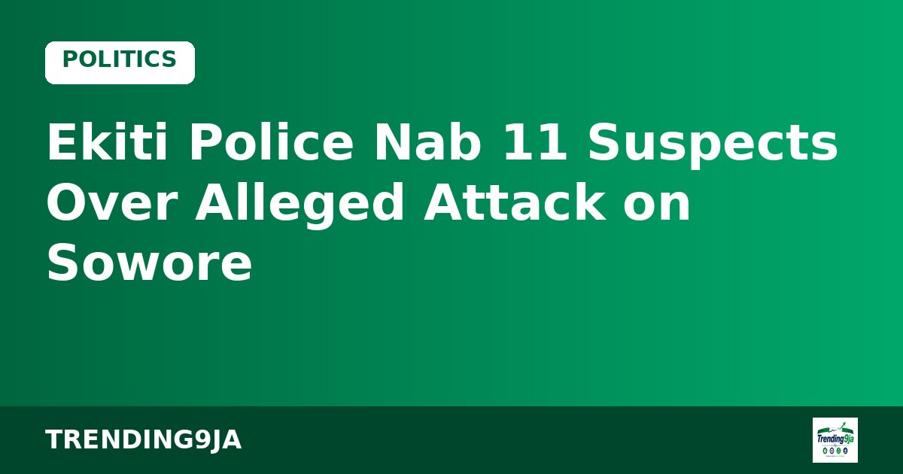
Ekiti State Police have arrested 11 suspects over an alleged attack on AAC presidential candidate Omoyele Sowore at a restaurant in Ado-Ekiti.
Bruno Fernandes has returned as Manchester United captain as both teams confirmed their starting lineups, Daily Post reports.
Kwara State Government has approved the 2026 bursary award for state indigenes in tertiary institutions, with applications opening on November 2.
Peter Obi and Seriake Dickson campaigned in Bayelsa State using a traditional Ijaw boat regatta to reach voters in the creeks, according to Daily Post.
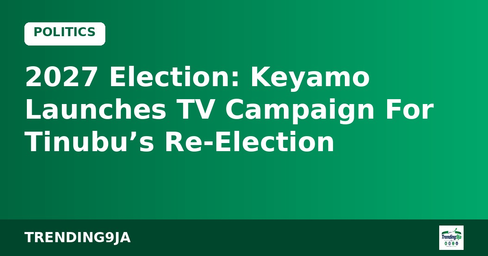
Aviation Minister Festus Keyamo has launched a television campaign to highlight President Bola Tinubu's aviation achievements ahead of the 2027 elections.
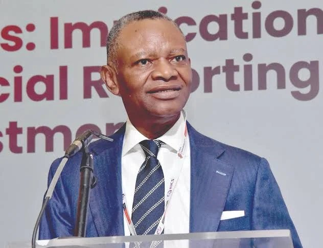
President Bola Tinubu has praised BusinessDay publisher Frank Aigbogun on his 70th birthday, highlighting his contributions to Nigerian media and economic reporting.
Femi Fani-Kayode has officially assumed his role as Nigeria's High Commissioner to South Africa after submitting credentials to local officials.
Fast-rising Nigerian comedian Egbaopewa Comedy has opened up about her career journey, religious criticism, and international growth, according to Punch.
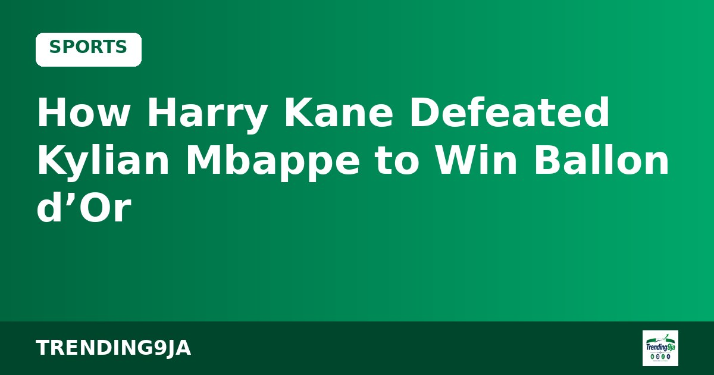
England forward Harry Kane narrowly defeated Kylian Mbappe by 28 points to claim the Ballon d'Or trophy, according to voting details published by France Football.
Nigerian basketball star Precious Achiuwa registered 24 points, but the Sacramento Kings suffered a 132-120 defeat against the New Orleans Pelicans.
Ogun Police Commissioner Bode Ojajuni has backed voter education drives ahead of the 2027 polls while receiving a civic group award in Abeokuta, Daily Post reports.
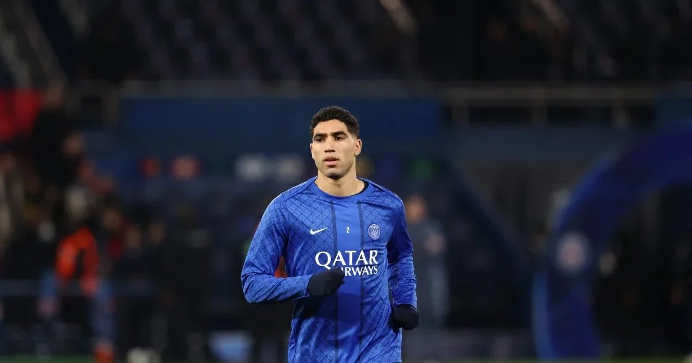
Achraf Hakimi scored a brilliant hat-trick to lead Paris Saint-Germain to a 5-1 victory against Le Havre, pushing PSG four points clear at the top of Ligue 1.
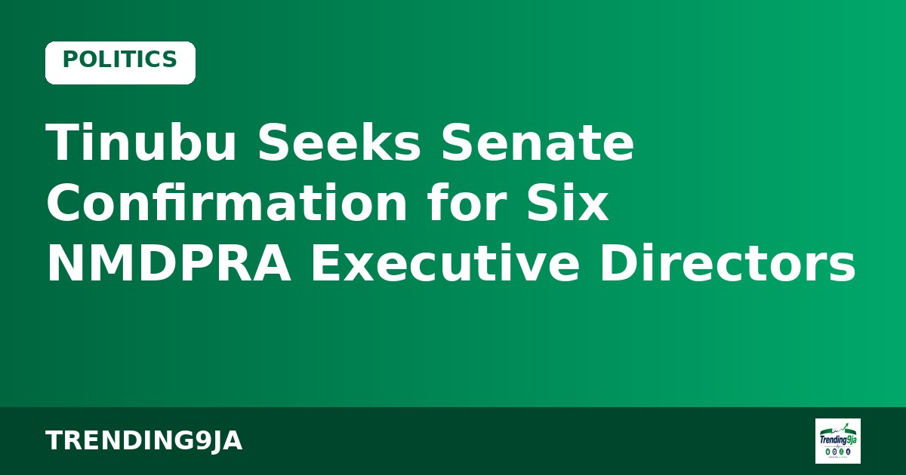
President Bola Tinubu has forwarded the names of six executive directors for the NMDPRA to the Senate for confirmation, Vanguard reports.
INEC has rejected a petition by Ogun PDP candidate Ladi Adebutu over his omission from the 2027 candidate list while clearing Isa Pantami and Abdulsalam Gwarzo.
President Bola Tinubu has defended Nigeria's borrowing strategy, stating that infrastructure investments will expand economic opportunities for future generations.
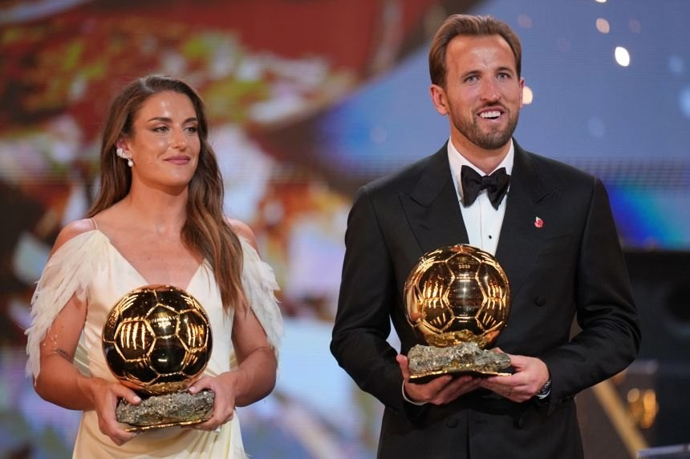
Harry Kane has won the 2026 Ballon d’Or in London, becoming the first Englishman to lift the trophy since Michael Owen in 2001.
President Bola Tinubu has arrived in Jeddah, Saudi Arabia, to perform the holy Umrah pilgrimage and pray for the nation, according to reports.
The quarter-final pairings for the FIFA Under-17 Women's World Cup in Morocco have emerged, with Nigeria scheduled to face Venezuela.
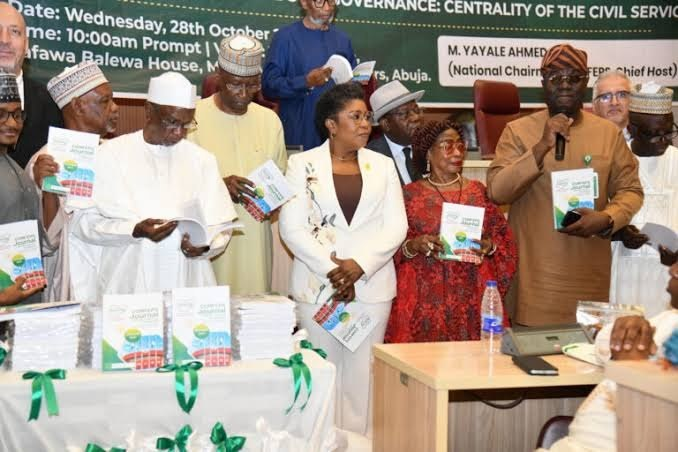
The National Directorate of Employment has launched a five-year plan to renovate 87 training facilities and boost vocational job creation across Nigeria.
NDC chieftains Pat Utomi, Aisha Yesufu, and Chinyeaka Ohaa have asked Nigerians to build grassroots support for Peter Obi ahead of the 2027 general elections.
Six teams, including Nigeria and China, have qualified for the FIFA U-17 Women's World Cup quarter-finals following their latest matches in Morocco.
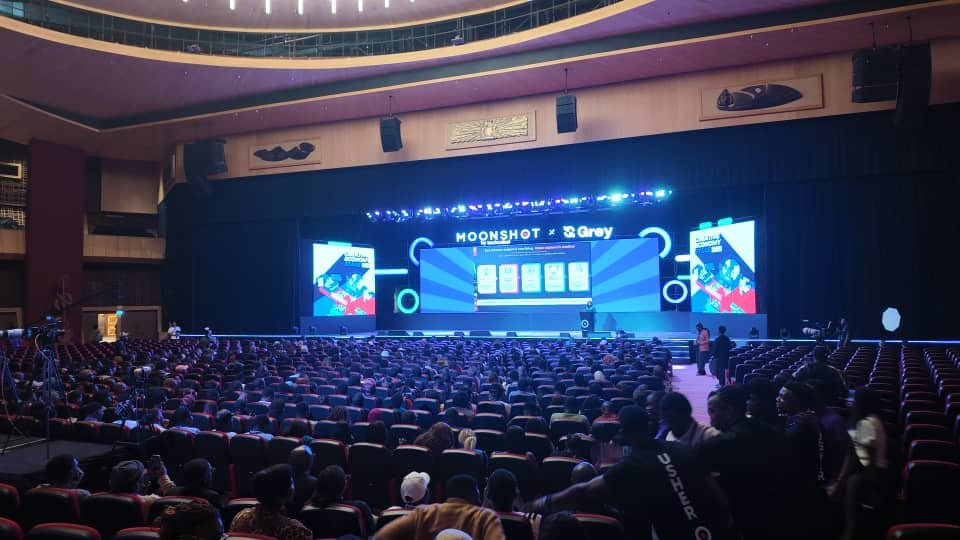
Former Google director Juliet Ehimuan has urged African tech and creative innovators to focus on owning intellectual property and building scalable enterprises.
Plateau State Police Command has warned officers to remain neutral and avoid partisan politics ahead of the 2027 general elections.
INEC has launched an electoral risk management workshop in Abia State to ensure peaceful and credible general elections in 2027, according to Vanguard.
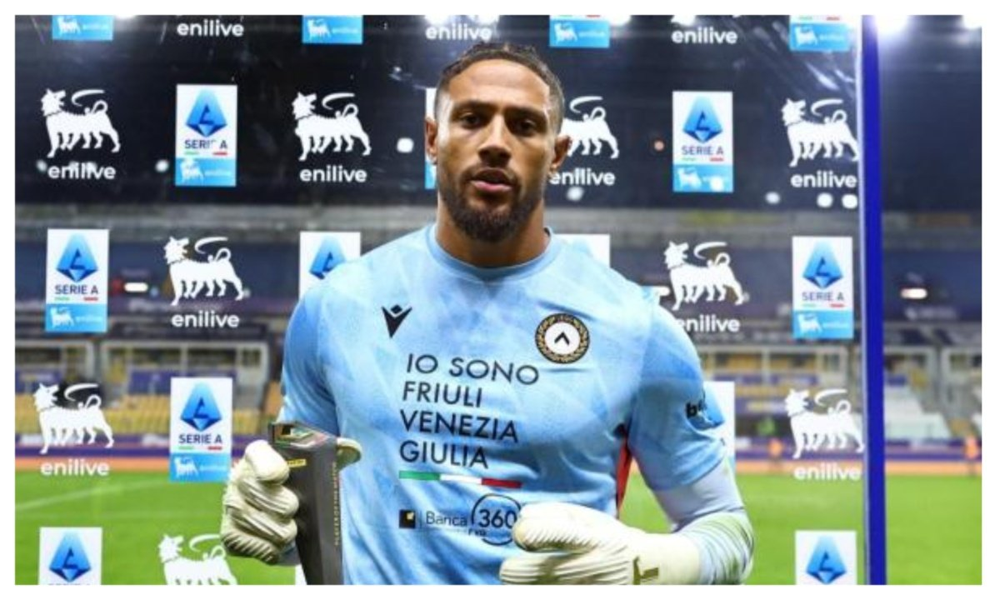
Super Eagles goalkeeper Maduka Okoye saved a crucial penalty to help Udinese end a six-game losing streak with an away draw against Parma.
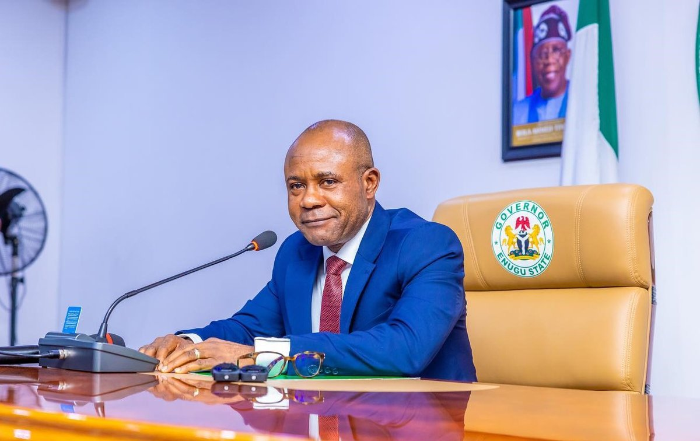
Enugu State APC Campaign Council has met to design mobilization strategies ahead of Governor Peter Mbah's 2027 re-election bid, Vanguard reports.
African tech executives at the Moonshot Conference in Lagos have urged founders to build resilience and local solutions amid tight early-stage venture funding.
ALTON has asked Nigerian state governments to remove right-of-way charges, stating they represent up to 60% of fibre optic setup costs.
The African Union has accredited Nigeria's National Counter Terrorism Centre as a West African hub for counter-terrorism operations and training, Vanguard reports.
A political coalition in Akwa Ibom State has vowed to secure massive votes for President Bola Tinubu and other APC leaders during the 2027 elections.
The Federal Government has approved the East and West super grid project to expand Nigeria's power transmission capacity to 19,000MW, according to Vanguard.
Instagram is testing 90-minute video uploads for select creators, allowing long-form content like podcasts and interviews directly on the app, Vanguard reports.
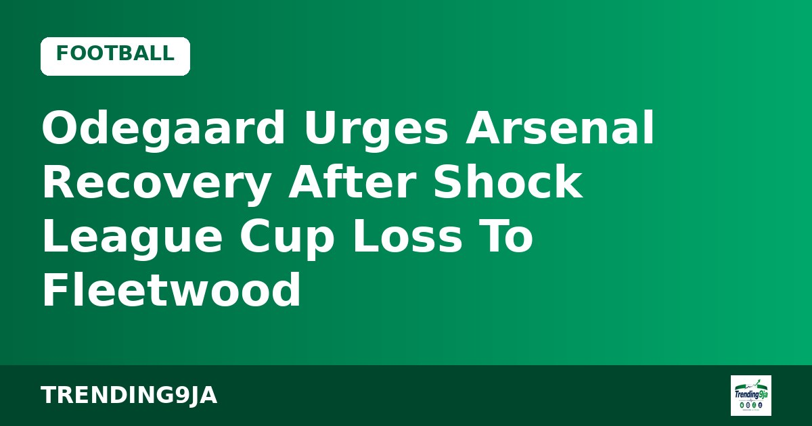
Arsenal captain Martin Odegaard has urged his side to recover quickly after suffering a shock League Cup elimination on penalties against fourth-tier Fleetwood.

Kuwait has set two strict conditions for foreign workers to join existing labor unions, while maintaining a total ban on expatriates forming new associations.

Arsenal manager Mikel Arteta expressed disappointment after his side suffered a shocking League Cup penalty shootout loss to lower-tier Fleetwood.

Thierry Henry has defended his Ballon d'Or interactions with Lamine Yamal, explaining that his questions were light-hearted banter rather than disrespect.

The Lagos State House of Assembly has supported the creation of state police while demanding greater local control and defined roles, according to Punch.

Fourth-tier Fleetwood Town eliminated Arsenal from the Carabao Cup following a 5-3 penalty shoot-out win after a 1-1 draw, according to Vanguard.

The Independent National Electoral Commission will soon release a revised candidate list for the 2027 general elections after completing a review process.

Russian Foreign Minister Sergey Lavrov has rejected claims that Moscow backed demonstrators who waved Russian flags during Nigeria's 2024 #EndBadGovernance protests.

The DSS has taken a man to court in Kaduna for allegedly sharing a forged letter from President Tinubu to the US leader online, according to Bayo Onanuga.

Dr Olusegun Osinkolu, PDP senatorial candidate for Ekiti North, has pledged quality representation and development across the district ahead of the 2027 polls.

The Nigeria Democratic Congress has appointed Senator Seriake Dickson and Peter Obi to head its campaign council for the 2027 presidential election.

Burna Boy presented Arsenal star Bukayo Saka with the Socrates Award at the Ballon d'Or ceremony, celebrating his humanitarian work.

Barcelona winger Lamine Yamal has claimed the 2026 Young Talent of the Year award at the Ballon d’Or ceremony for the third consecutive time, Punch reports.

Rise Networks, INEC, and tech giants have unveiled the #AI4Elections Hackathon to create AI tools for Nigeria's 2027 elections.

The Delta State APC has pledged to focus on issue-driven campaigns and shun violence ahead of the 2027 general elections, according to Punch.

Atiku Abubakar has promised to back Nigeria's video game industry after local browser game Lagos Life attracted $500,000 from angel investors, according to Vanguard.

The Ondo State House of Assembly has passed the constitutional alteration bill to enable the creation of state police, according to Punch.

Governor Hope Uzodimma has proposed a collaboration between government, media, and citizens to deepen Nigeria's democracy, according to Vanguard.

The Obi-Kwankwaso Movement has criticised the Nigeria Democratic Congress over its newly formed campaign council list ahead of the 2027 polls.

Nigeria, Ghana, and Morocco have advanced to the Round of 16 at the 2026 FIFA U-17 Women’s World Cup in Morocco, Vanguard reports.

Manchester United boss Michael Carrick could lose his job if his team fails to secure a victory against Bournemouth on Sunday, according to reports.

A northern youth coalition says the high attendance at a Kaduna rally shows Northern Nigeria supports President Bola Tinubu's 2027 re-election bid.

Julian Alvarez has apologised to Atletico Madrid fans for attempting to force a summer exit, acknowledging his mistake after restoring form with recent goals.

Julian Alvarez scored the winning goal for Atletico Madrid in their 1-0 La Liga victory over Deportivo La Coruna, Vanguard reports.

Brazilian football legend Ronaldinho is coming out of retirement at age 46 to play for Italian third-tier side Ravenna next month, according to Punch.

Tottenham Hotspur recorded a rare 2-0 victory over Chelsea at Stamford Bridge following an own goal and a red card for Cole Palmer, Vanguard reports.

Former Vice President Atiku Abubakar has criticized President Bola Tinubu for blaming opposition parties for the country's economic hardship.

Governor Lucky Aiyedatiwa has warned NYSC members in Ondo State against getting involved in local politics and illegal acts, Vanguard reports.

Gianni Infantino claims strong backing from member associations for his FIFA presidential re-election bid following regional endorsements, according to Vanguard.

Nigerian singer Zlatan Ibile and his partner Davita Lamai have posted traditional wedding photos on Instagram ahead of their ceremony, according to Punch.

Plateau State has organized a training workshop to equip top government officials with Artificial Intelligence skills to boost public service delivery.

Choreographer Kaffy has reflected on her journey from university sports to professional dancing and gaining recognition through a Guinness World Record.

The EFCC has launched its recruitment drive across four main categories, warning applicants that the submission process is entirely free, according to Legit.ng.

George Ilenikhena has scored in consecutive matches for Saudi Arabian side Al-Ittihad, bringing his goal contributions to eleven this season, Punch reports.

FWIFT Nigeria will host its 2026 national convention in Lagos to empower women across film, broadcast, and digital media platforms.

Legal analyst Anyakweh Amadi says President Bola Tinubu's major economic, security, and tax reforms put him in a strong position ahead of the 2027 elections.

MC Alger overturned a first-leg deficit to beat Rangers International 3-0 and qualify for the CAF Champions League group stage 3-2 on aggregate.

Vice President Kashim Shettima met with Fullo security staff at a teaching hospital during an official project commissioning visit to Maiduguri, Borno State.

The Nigerian naira ended the week on a weak note, depreciating against the US dollar in both official and parallel markets despite rising foreign reserves.

Donald Trump's administration has reduced import duties on select Canadian goods following political pressure ahead of US midterm polls, according to Vanguard.
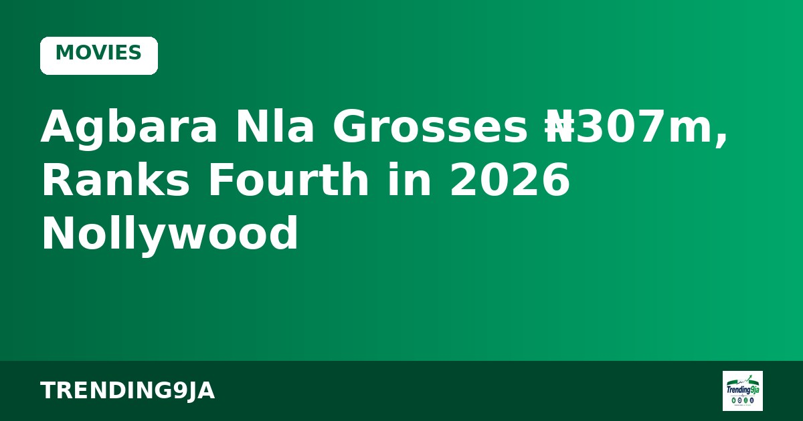
Faith-based film Agbara Nla: The Return becomes the highest-grossing Nollywood title for an October release.
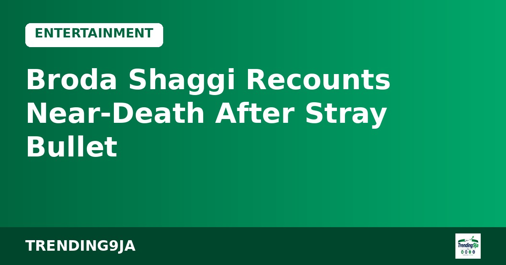
Nigerian skit maker Broda Shaggi shares how a stray bullet hit him while filming in Ogun.
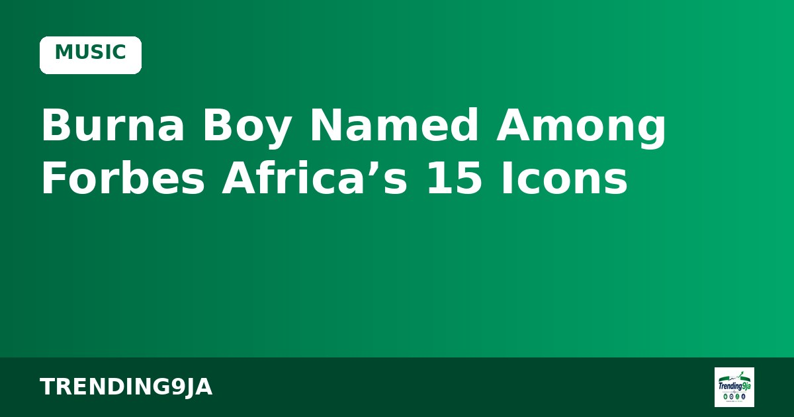
Grammy-winning singer Burna Boy makes Forbes Africa’s special list of the continent’s most influential figures.
FG confirms imported Bundibugyo Ebola case in FCT; 44 contacts identified, no-fly list activated.
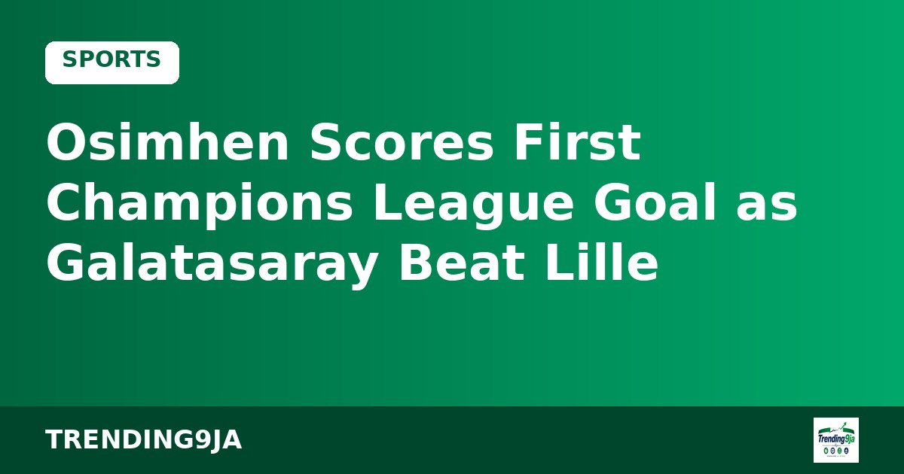
Victor Osimhen ends his UCL drought as Galatasaray come from behind to beat Lille 4-2.

2,000+ arrests, Limoges town hall destroyed, Macron addresses nation. Curfews imposed in Paris.

NDC VP says party will not withdraw for ADC/Atiku ahead of 2027.

Dismisses Makinde’s claim that FG is holding dividends until after 2027 elections.

Tinubu and governors mourn the late statesman who passed in Abuja.

Actress announces the death of her mother.

Sanctions for failing to provide adequate security at home games.

Campaign aims to curb infectious diseases through better hygiene practices.

Platform targets 500,000 women, 5,000 health workers and 500 facilities by 2030.

Experts and policymakers discuss practical AI frameworks for Nigerian healthcare.

G100 convener says alliance may name one presidential candidate days before the election to avoid splitting the vote.

APM camp predicts losses in Lagos, Rivers and 10 other states over economic hardship.

President opens peace talks with Osun governor over local government control dispute.

Tenia Abraham Omenogor has been laid to rest after battling a kidney infection.

Week-long offline Afrobeat celebration ends tonight. Femi, Made & Seun Kuti among the live energy.

Nigeria’s under-17 women’s team lose their opening match of the tournament.

Pharmaceuticals, chemicals and unwholesome foods seized at Onne Port destroyed in Port Harcourt.

Plan aims to bring network access to communities currently offline.